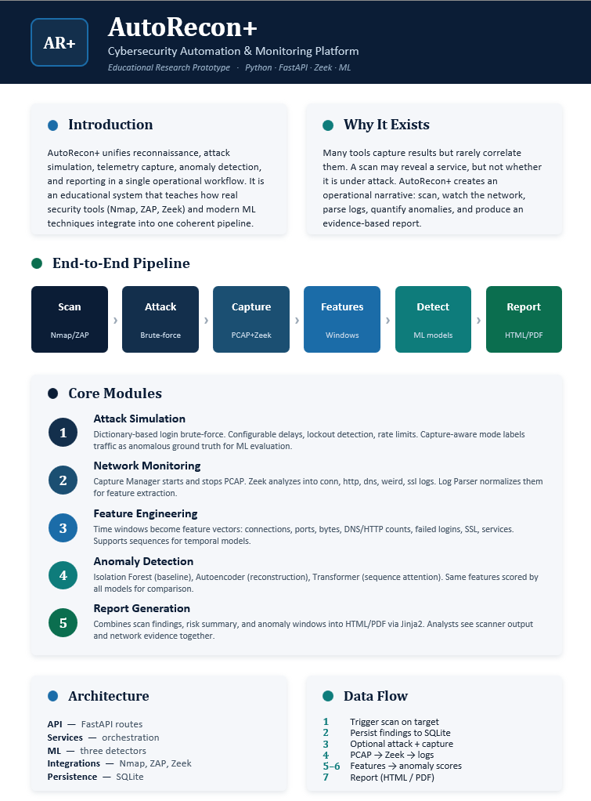

AutoRecon+

I am currently developing AutoRecon+, a cybersecurity automation and monitoring project that explores how reconnaissance, attack simulation, network traffic capture, feature engineering, machine learning–based anomaly detection, and security reporting can be integrated into a single end-to-end workflow. Still under active development, the project is motivated by concepts from Computer Networks and aims to move beyond theory by investigating how network communication, traffic analysis, cybersecurity tools, and machine learning can work together in a practical environment.

AutoRecon+ remains an evolving research prototype and broader proposal rather than a finished platform. It represents my ongoing exploration of unifying networking, cybersecurity automation, network monitoring, machine learning, and reporting. As development continues, components and design decisions will continue to change and improve, while giving me the chance to apply what I have learned—especially from Computer Networks—toward a more complete and intelligent cybersecurity system.